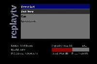
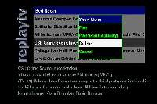
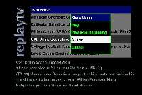
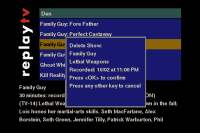
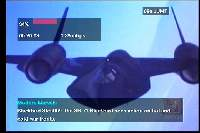

mvpmc ReplayTV
2005-02-21, v0.00.01
mvpmc main menu device menu

show menu show menu popup
 

delete show on screen display


mvpmc Fonts
mvpmc offers three GUI OSD(On Screen Display) font sizes.
- 10 point Helvetica: (default)
- 14 point Helvetica: /etc/helvB14.pcf
- 18 point Helvetica: /etc/helvB18.pcf
The ReplayTV GUI is optimized for an 18 point font.
The font is specified on the mvpmc command line with the "-f" option.
eg:
mvpmc -f /etc/helvB18.pcf
mvpmc ReplayTV options
ReplayTV options are specified with the "-R" flag.
At a minimum you must specify either a static IP address list or tell mvpmc
to run ReplayTV Discovery.
NOTE: DVArchive must be discovered to kick it in to ReplayTV 5K mode.
The format is:
-R discover
-R IPAddr1/IPAddr2/IPAddr3...
e.g: -R 192.168.1.10/192.168.1.11/192.168.1.12
Example for 18 point font with ReplayTV discovery:
mvpmc -f /etc/helvB18.pcf -R discover
Multiple ReplayTV options can be passed using the form: -R "< option list >"
The following options are supported:
examples:
mvpmc -f /etc/helvB18.pcf -R "ip=discover debug=58"
mvpmc -f /etc/helvB18.pcf -R "ip=discover debug=1FF logfile=/nfs/mvplogs"
Show Menu
- OK: Brings up show menu popup
- PLAY: Plays show
- RED: Up one page
- YELLOW: Down one page
Video Playback
- BLANK: Brings up OSD
- PLAY: Plays show
- FFWD: 2X FastForward
- REW: Jump back one second
- SKIP: Jump forward 28 seconds
- REPLAY: Jump back 7 seconds
- [0..9]: Enter Time to Jump to
- GO or GREEN: Jump to entered time
rtv_shell is a command line utility for executing libreplaytv functionality.
It provides access the ReplayTV's http filesystem, guide, etc...
Following is the help menu:
rtv_sh>help
SHELL COMMANDS:
sendlogs : send logs to a file
sdm : set the debug trace mask
discover : discover RTV devices
di : get RTV device information
devlist : print device list summary
guide : get RTV guide
delshow : delete a show
playpos : get shows current play position
free : free rtv data struct
fsvi : http filesystem: get volume info
fsstat : http filesystem: get file status
fsls : http filesystem: list directory
fsget : http filesystem: get file
crypttest : Test encryption routines
clitestfxn : test parameter parsing
help : display this help
help <command> provides detailed help for the command.
Link to rtv_shell session
rtv_shell for PPC can be executed from the MVP by copying the
rtv_shell executable from the mvpmc build tree to a NFS or CIFS share
that is mounted by the MVP.
rtv_shell builds and runs for linux x86.
To build for x86 cd in your build tree to host/mvplib/libreplaytv and do a make.
Problems should be reported to the mvpmc-devel mailing list.
There are lots of Error print statements in the mvpmc and ReplayTV code.
To be able to see them you need to start mvpmc from a telnet session instead
of starting it from the config script.
Hopefully the problem can be reproduced easily and Error logs will occur
when it happens.
If mvpmc is trapping and exiting when the problem occurs you can get a core
file to debug by doing the following:
- Mount a NFS or CIFS share in Read/Write mode on the MVP.
- telnet to the MVP.
- Enter: "ulimit -c 2000" to enable coredumps.
- cd to the NFS or CIFS share directory.
- start mvpmc and reproduce the problem.
This should cause a core file to be dumped to to the NFS/CIFS's share.
If you have a mvpmc development environment setup then run gdb
on the core file.
Otherwise, post the problem to the mvpmc-devel mailing list.
Myself or someone else will ask you to email the core file so we can analyze it.
If you'd like to help out let me know.
ReplayTV List-O-Things
- Screwed up RTV streaming performance some time in last month. Can't keep buffer
full for some high quality mpgs. Need to fix.
- For show "play", currently only query RTV that show is stored on for "last play pos".
Need to investigate protocol further, cache last-play-pos on MVP so this works better.
- When hit "stop" | "back" during show play: display popup: (Resume|Back-To-Guide|Delete).
- When end of mpg reached: display popup: (Back-To-Guide|Delete).
- Update libreplaytv to process 5K evt files and create structure with comercial markers.
- Implement GUI 5K manual comercial skip.
- Currently only run RTV SSDP server long enough to kick DVArchive into 5K mode.
This causes DVArchive to generate error messages after our server is stopped.
Need to change SSDP server to thread that runs in background.
- RTV 4K stuff is not complete. I can kick DVArchive into 4K mode for testing
but I don't have a real 4K mpg or ndx file.
If someone could send me a CD with a 4K 1/2 hour low res mpg & ndx file that would be great!
Do 4k Jump/seek & manual comercial skip.
- GUI can hang for certian networking error conditions. Need to update libreplaytv networking code
to use signals and shorter error timeouts.
- Update libreplaytv guide parsing to finish parsing replay channel info.
- Add "details" show menu popup, that displays tons-o gorry details about
a replay show, it's replay channel, etc...
- get rtv_shell building for w32 winsock.
- wrap mvpmc/src/replaytv.c error & debug output to use libreplaytv logging utilities.
- setup a more ReplayTV GUI like color scheme.
- optimize replaytv pthread stack size.
MVP General List-O-Things
- Do some nifty OSD graphics widgets for video operations. play, fwd, rew, seek, replay,
comercial skip, etc...
- Setup and test cygwin development environment for mvpmc w32 builds & debugging.
- Investigate getting freetype anti-aliased fonts working.
- package useful utilities such as colortest & rtv_shell so they can easily be installed
on a NFS/CIFS export and executed from the MVP.
CIFS filesystem streaming performance is lacking. Figure out whats going on. Fix. Done 03/06/2005